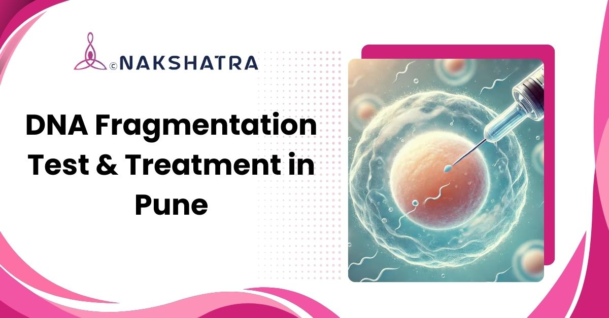

DFI assessment
DNA Fragmentation Index helps identify sperm DNA damage extent.
Advanced sperm DNA fragmentation testing and treatment support in Baner, Pune for couples facing male subfertility, IVF or ICSI failure, poor embryo development, or repeated miscarriages.

DNA Fragmentation Index helps identify sperm DNA damage extent.
Specialized lab methods guide targeted treatment planning.
Findings are reviewed with fertility history, IVF/ICSI outcomes, and lifestyle factors.

In modern fertility treatments like in vitro fertilization (IVF), even a small quantity of high-quality sperm can result in pregnancy. However, the genetic integrity of sperm is critical for fertilization success and healthy embryo development.
Sperm DNA fragmentation refers to damaged or broken DNA within sperm and is a major cause of male subfertility, IVF failure, and miscarriage. A healthy DNA molecule has a double-helix structure resembling a ladder. If even one rung breaks or becomes unstable, the entire genetic ladder can collapse, leading to fragmented sperm and potential fertilization problems. At Nakshatra Clinic, we specialize in advanced DNA fragmentation testing and treatment in Baner, Pune to help men improve sperm quality and fertility outcomes.
The original treatment areas are preserved here with clearer cards, safer spacing, and responsive mobile stacking.
We use advanced tests like SCSA and TUNEL assay to measure DNA fragmentation accurately. These help identify the root causes and guide a personalized fertility treatment plan.

Targeted medical treatments and antioxidants reduce oxidative stress and repair DNA damage, improving sperm motility, morphology, and natural conception outcomes.

Treating conditions like varicocele helps restore testicular function, improve blood flow, and reduce DNA damage, supporting fertility outcomes.

Advanced fertility techniques like IVF and ICSI use high-quality sperm to improve fertilization rates and reduce the impact of DNA fragmentation on pregnancy.
Personalized advice on diet, exercise, stress management, and healthy habits improves sperm quality and supports long-term reproductive health and fertility.
Testing may be discussed when fertility history suggests sperm DNA damage that is not visible in routine semen testing.
DNA fragmentation can reveal hidden sperm DNA issues when routine evaluations do not explain difficulty conceiving.
Testing can help review sperm genetic integrity when embryo development or prior cycles have been challenging.
Assessment may be considered when sperm DNA damage is suspected as one possible contributing factor.
A DNA fragmentation test evaluates the integrity of sperm DNA to identify damage that may reduce fertility, IVF success, or embryo development. Treatment usually includes a combination of medical therapy, antioxidant supplements, surgical correction if needed, lifestyle changes, and assisted reproductive techniques to improve sperm quality and overall reproductive outcomes.
Sperm DNA fragmentation may be caused by oxidative stress, infections, varicocele, exposure to toxins, smoking, excessive alcohol, advanced age, certain medications, and problems in spermatogenesis. Identifying and correcting these factors helps improve sperm quality and fertility outcomes.
The test is performed in a laboratory using specialised techniques such as SCSA (Sperm Chromatin Structure Assay) or the TUNEL assay. These tests analyse sperm DNA integrity and provide a DNA Fragmentation Index (DFI), which helps fertility specialists detect the extent of DNA damage and plan targeted treatment.
A DNA fragmentation test is recommended for men with unexplained infertility, recurrent IVF or ICSI failure, poor embryo development, abnormal semen analysis, or repeated miscarriages. It helps uncover hidden sperm DNA issues that are not visible in routine semen tests.
The duration of treatment depends on the underlying cause, sperm quality, and chosen therapy. With lifestyle changes, antioxidants, and medical management, improvement is usually assessed over 3-6 months, as this matches the natural sperm production cycle. Your fertility specialist will provide a personalised timeline based on your condition.
Book a consultation at Nakshatra Clinic in Baner, Pune to discuss testing, reports, possible causes, and treatment support for sperm DNA fragmentation.